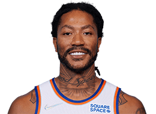

NBA
首页
赛程
球员
精彩集锦
球队
联系我们

德里克-罗斯
Derrick Rose
尼克斯 后卫 4号
别名
罗斯
身高
188cm
体重
97.0kg
臂展
203cm
选秀
2008年首轮第1顺位被公牛队选中
薪水
1344万美元
球龄
13年
国籍
美国
学校
曼菲斯大学
球员介绍
德里克-罗斯（英文名：Derrick Rose，1988年10月4日出生）家乡位于美国伊利诺伊州芝加哥，美国职业篮球运动员，司职控球后卫，效力于NBA纽约尼克斯队。
德里克·罗斯在2008年NBA选秀中于首轮第1顺位被芝加哥公牛队选中。2010-11赛季，22岁的罗斯荣膺NBA常规赛最有价值球员（MVP），成为NBA历史上最年轻的MVP，该赛季入选NBA最佳阵容一阵和NBA全明星赛首发阵容。2016年6月23日被交易至纽约尼克斯队，2017年7月25日加盟克利夫兰骑士队，2018年3月9日加盟明尼苏达森林狼队。2019年7月1日加盟底特律活塞队。
德里克-罗斯不仅拥有劲爆的身体素质，也拥有顶级的进攻技巧。其变向突破和切入能力已入化境，是所有一对一防守者的绝对噩梦。2011年，NBA新劳资协议中增加“罗斯条款”，以使符合条件的优秀年轻球员能够更早地获得占据球队工资帽30%的顶薪合同。
2021年休赛期，尼克斯以4300万美元的价格与罗斯续约三年。
©2021包头师范学院20级国际班ZYN--web项目
任何内容都不得以任何形式被复制、再传播，或篡改。
有任何的建议和意见，都欢迎联络我:1176164611@qq.com